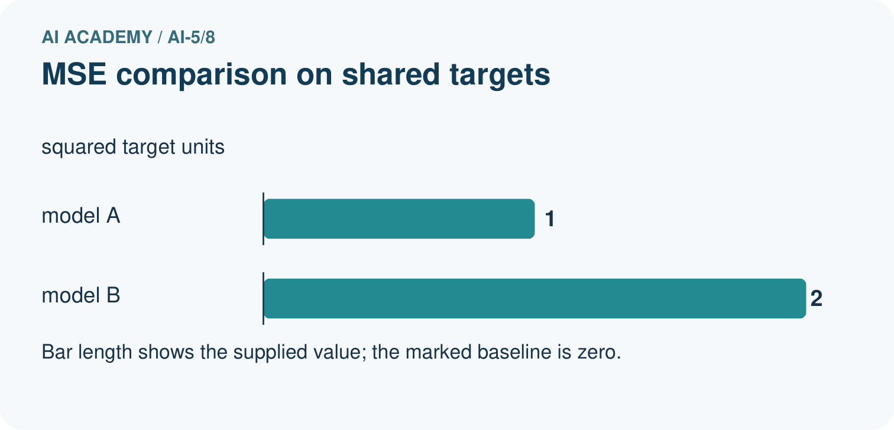
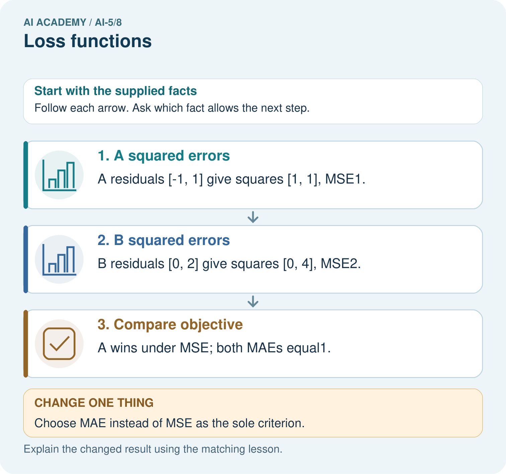

AI Academy · Level 5 · Grade 10 · Week 8 · Teacher guide
Loss functions
Learn to understand, design, build, test and explain AI systems responsibly.
Project: Image-pattern Network Investigation
Teacher guide · 1 of 7
Prepare the purpose, prerequisites and materials
Teach the learning cycle
Primary target: Calculate per-example squared error and mean squared error
| Session | Sequence and minutes | Resources |
|---|---|---|
| Session 1 · Understand · 45 min | 0–7: recall and prerequisite; 7–15: inspect the concrete case and predict; 15–30: teacher models the worked trace; 30–40: learners explain a step using the text and visual; 40–45: check the core idea. | Sections 1–6; record the brief recall in the workbook. |
| Session 2 · Practise · 45 min | 0–5: retrieve the procedure; 5–15: W2 completion practice; 15–23: explain and check with a partner; 23–30: each learner answers the misconception check; 30–40: targeted reteaching or a harder variation; 40–45: prepare the investigation. | Sections 7–10; use the matching workbook W2 and misconception check. |
| Session 3 · Investigate and transfer · 45 min | 0–5: retrieve the decision rule; 5–20: investigate or trace; 20–30: start the independent case; 30–38: connect the project; 38–43: act on feedback; 43–45: plan the return check. | Sections 9 and 11–14. Give extra time to finish the full task set; use Section 15 when the week includes a coding lab. |
This is a starting allocation of 135 minutes, not a validated duration. Preserve all named topics. Schedule extra time for connected examples, the full investigation, independent cases and project building. Repeated copies of a case share one recorded attempt; they are not new evidence.
Retrieval answer guidance
Parameters and architecture
Without opening the old lesson, explain one key idea from Parameters and architecture. Give an example and a mistake that the idea helps you avoid.
Look for: Distinguish architectural choices from parameter values
Reference example, not the only acceptable wording: Teacher explanation: There are 8 weights and 2 biases, total 10.
Composing layers
Without opening the old lesson, explain one key idea from Composing layers. Give an example and a mistake that the idea helps you avoid.
Look for: Trace how one layer supplies the next layer inputs
Reference example, not the only acceptable wording: Teacher explanation: Scores are -2 and 2; activations are 0 and 2; y = 0 - 2 + 1 = -1.
Dot products and weighted sums
Without opening the old lesson, explain one key idea from Dot products and weighted sums. Give an example and a mistake that the idea helps you avoid.
Look for: Calculate a dot product by matching feature positions
Reference example, not the only acceptable wording: Teacher explanation: Contributions are 6 and -5, so the score is 1.
Keep paired prediction and target rows visible in both 45-minute sessions. Require residuals, per-row penalties and the denominator before accepting an average. This week uses regression and ordinary MSE; do not introduce a different scaling convention midway.
Outcomes
Calculate per-example squared error and mean squared error
Distinguish residual cancellation from a low loss
Separate training loss from independent evaluation
Preparation
Printed lesson and workbook; paper and pencil
Calculator and optional local Python 3 editor; no packages or AI accounts needed
Use the fictional examples supplied; prepare the fresh retry before class
Prerequisite answer
No. We also need a target or other evaluation criterion and appropriate examples.
End goal for the pictorial case
By the end, I can explain loss functions using a traced example and a stated limitation.
This added worked case illustrates the week’s main idea. Retain all original and connected topics; schedule its practice within the teaching cycle.
Teacher guide · 2 of 7
Explain and model the mechanism
A loss assigns a numerical penalty to a prediction compared with a target. For this regression lesson, residual e = prediction - target, and squared error is e squared. Squaring makes both positive and negative residuals contribute nonnegative penalties. We use ordinary mean squared error without a one-half factor.
The mean squared error, or MSE, is (1 + 1 + 4) / 3 = 2. It summarises these three examples, not every possible future input. If targets use cm, residuals use cm and MSE uses square cm.
For targets [1, 3] and predictions [2, 2], the mean residual is zero because 1 and -1 cancel. MSE is 1, correctly recording that both predictions miss. A mean residual can describe directional tendency, but it is not a substitute for an error magnitude.
The guard prevents silently ignoring an unmatched example or dividing by zero. It still assumes paired, numeric, valid records. Wrong row alignment produces a meaningless comparison even when list lengths agree.
| Term | Meaning |
|---|---|
| Target | The recorded value a model is intended to predict |
| Residual | Prediction minus target under the sign convention used here |
| Squared error | The square of a numerical residual |
| Mean squared error | The average squared error over the evaluated examples |
Use the same targets and denominator
Guided: residuals [-1, 0, 1], squares [1, 0, 1], MSE 2/3, tied with the baseline under MSE. Exit: zero training MSE establishes an exact fit on those recorded targets under the chosen loss; it does not establish performance on unseen cases or correct labels.
Model the reasoning aloud
Use the complete worked example below before asking learners to complete W2. Reveal a small part, invite a prediction, then explain the deciding step. These teacher notes contain solutions; do not reveal the independent case answer during modelling.
Use the same targets and denominator
| Thinking move | Teacher prompt |
|---|---|
| Plan | What is given? What is the question? Which procedure fits these facts? |
| Do | Point to each input and intermediate step in the worked trace. Name the rule that allows the next step. |
| Check | Does the output answer the question? Which assumption or limitation prevents a larger claim? |
Use the diagram and verbal explanation together. Ask learners to match a sentence to a specific visual step; do not assign learners fixed visual or auditory learning styles.
A pictorial worked case: Loss functions
Compare candidate losses with the same targets and denominator.
The facts we will use
Targets [1, 3]; A predicts [0, 4]; B predicts [1, 5]. Use MSE over both cases.
All inputs and outcomes in this worked example are invented classroom data; no real model run is claimed.


Read the picture one step at a time
Why this result follows
For this loss calculation, the signed error is prediction minus target. MSE squares each error before averaging; MAE takes its absolute value. A spreads its error equally across both cases, while B concentrates it in one case. Squaring makes the larger individual error count more. State the objective before selecting a model, because these two objectives give different comparisons.
What this example does not establish
Training loss is not automatically a held-out performance estimate or a complete measure of use consequences.
Change one thing in the pictured case
Change: Choose MAE instead of MSE as the sole criterion.
Prediction: A and B tie at MAE1.
Reason: Squared error penalises B’s concentrated error more, while absolute errors both sum 2.
Ask while showing the picture
Cover the result. Ask learners to name the inputs and predict the next step. Uncover one step, connect the icon to the actual procedure, and explain its evidence. Then change the supplied condition and compare. The picture is a representation; it does not document execution of a real AI model.
Teacher guide · 3 of 7
Demonstrate and guide practice
| Time or stage | Teacher action |
|---|---|
| Session 1 start to 7 minutes | Retrieve why outputs alone do not establish correctness. |
| 7 to 18 minutes | Calculate A, B and C row by row. Explain the sign convention and units. |
| 18 to 32 minutes | Complete W1 and W2, showing how cancellation hides error. |
| 32 to 45 minutes | Run or trace the guarded MSE code; try unequal and empty lists. |
| Session 2 start to 8 minutes | Use W3 to recover the full denominator, then compare the visual candidates. |
| 8 to 20 minutes | Complete the guided R case and discuss squared versus absolute penalties. |
| 20 to 35 minutes | Collect W4 independently, including both metrics and a qualified conclusion. |
| 35 to 45 minutes | Use W5 and the exit response. Administer the fresh retry after feedback. |
Use the worked example in Sections 3 and 6. Collect a prediction before revealing its result; ask the learner to point to each intermediate fact.
Provide a residual and squared-error table and permit a calculator for fractions. Extension: if both targets and predictions are converted from cm to mm, explain why residuals multiply by 10 and MSE by 100 while candidate ranking stays the same.
Reduce help deliberately
Completion task: Targets [0, 4] have predictions [2, 2]. Compare mean residual and MSE.
Teacher check: Teacher explanation: Residuals 2 and -2 average to 0; squares 4 and 4 give MSE 4. Both predictions are wrong despite zero mean residual.
Start by identifying the given inputs together. Leave the intermediate steps blank. If needed, model one step, then withdraw that help on the next step. Move to a full trace only when the partial trace is understood. For partners, alternate explainer and checker; collect a response from every learner before discussion.
Individual reasoning check
Use the worked case for Loss functions. Proposed explanation: “Average residual is the loss”. Decide whether this explanation is supported. Point to the step or supplied fact that decides; explain your repair if needed.
Expected correction: Signed residuals can cancel. Apply the specified penalty before averaging.
Collect explanations, not only yes/no votes. If a misunderstanding is common, re-model the relevant step for the class. If it affects a few learners, give a short targeted group explanation while others solve a more demanding variation.
Pictorial practice question
Why must the report name the chosen loss? Point to the relevant step in the picture, then write the changed result and the rule or evidence that supports it.
Reasoned teacher answer
The same predictions produce a strict A win under MSE and a tie under MAE; “better” depends on the declared objective. Changed-case check: A and B tie at MAE1. Squared error penalises B’s concentrated error more, while absolute errors both sum 2.
Changed-case reasoning: A and B tie at MAE1. Squared error penalises B’s concentrated error more, while absolute errors both sum 2.
Collect each learner’s explanation before discussion. Use the first missing connection between input, deciding step and result to choose support. This question is worked-case practice, not fresh mastery evidence.
Teacher guide · 4 of 7
Run the investigation and diagnose misconceptions
Average residual is the loss: Signed residuals can cancel. Apply the specified penalty before averaging.
Ignore perfect predictions in the average: The denominator includes every valid evaluated pair, including zero-error cases.
One metric gives the universal winner: Different losses express different penalties. Choose and disclose the criterion.
Use Section 9 for the evidence ledger. Add a boundary or missing-input case and record the expected response before checking. More successful repeats of one case do not establish wider coverage.
Match the support to the first error
| What the response shows | Next teaching action |
|---|---|
| Missing or misread facts | Read the case aloud, mark supplied versus unknown facts, and let the learner restate it. |
| Wrong procedure | Return to the deciding step in the worked case. Contrast it with the proposed incorrect explanation. |
| Arithmetic or implementation error | Trace intermediate values or lines; preserve the first mismatch and retry that step. |
| Correct result without a reason | Ask for a trace and a changed case before marking independent understanding. |
| An unsupported wider claim | Ask which supplied evidence supports the claim and which further observation would be needed. |
Offer an oral explanation, drawing, enlarged visual or fewer examples when that removes a reading/writing barrier. Keep the same reasoning goal. Stretch secure learners by changing a boundary or assumption and asking them to defend the effect, not simply by assigning more of the same questions.
Teacher guide · 5 of 7
Assess and explain the answers
Guided and exit questions
Guided: residuals [-1, 0, 1], squares [1, 0, 1], MSE 2/3, tied with the baseline under MSE. Exit: zero training MSE establishes an exact fit on those recorded targets under the chosen loss; it does not establish performance on unseen cases or correct labels.
W1 Calculate a loss
For targets [2, 4] and predictions [1, 6], record residuals, squares and MSE.
Teacher explanation: Residuals are -1 and 2, squares 1 and 4, MSE 2.5.
W2 Expose cancellation
Targets [0, 4] have predictions [2, 2]. Compare mean residual and MSE.
Teacher explanation: Residuals 2 and -2 average to 0; squares 4 and 4 give MSE 4. Both predictions are wrong despite zero mean residual.
W3 Check the denominator
A learner totals squared errors 1, 0, 9 and divides by 2 because there are two nonzero errors. Correct the MSE.
Teacher explanation: All three evaluated examples count. MSE is 10 / 3, not 5. A zero-error example is still an example.
W4 Compare an unfamiliar evaluation independently
Targets are [0, 2, 4]. Model A predicts [1, 2, 3]; model B predicts [0, 2, 2]. Calculate both MSEs and identify the better model under MSE on these cases. Calculate mean absolute errors too. State what changes in the conclusion.
Teacher explanation: A residuals [1, 0, -1] give MSE 2/3; B [0, 0, -2] gives MSE 4/3, so A is better under MSE. Both mean absolute errors are 2/3, giving a tie under that metric. Neither ranking establishes future performance.
W5 Protect final testing
A team tries ten models and picks the one with the lowest final-test MSE. Can that same result be presented as an untouched final evaluation?
Teacher explanation: No. The test informed selection and became development evidence. Preserve the result with that disclosure, freeze the chosen process and use fresh independent evaluation for a new final claim.
Independent assessment and fresh retry
W4 requires MSEs 2/3 and 4/3, tied MAEs 2/3, and limited claims. Fresh retry: targets [1, 5], predictions [3, 4] give residuals [2, -1], MSE 2.5 and MAE 1.5. Reject averaging the residuals to 0.5 as an error magnitude.
Assess independent transfer
Selected case: Targets are [0, 2, 4]. Model A predicts [1, 2, 3]; model B predicts [0, 2, 2]. Calculate both MSEs and identify the better model under MSE on these cases. Calculate mean absolute errors too. State what changes in the conclusion.
Selected case answer
Teacher explanation: A residuals [1, 0, -1] give MSE 2/3; B [0, 0, -2] gives MSE 4/3, so A is better under MSE. Both mean absolute errors are 2/3, giving a tie under that metric. Neither ranking establishes future performance.
| Dimension | Evidence required |
|---|---|
| Explanation | Names the applicable idea or procedure and ties it to the supplied facts. |
| Trace and result | Preserves the given inputs and shows the relevant intermediate steps; distinguishes a prediction from an observed execution. |
| Limits | States the assumptions, missing evidence or conditions under which the result would change. |
Record each dimension as not yet, with support, or independent. Accept a valid alternative procedure with a defensible trace. Do not penalise an honestly recorded model failure if the learner correctly explains its evidence and limits.
Feedback that the learner uses
Name the earliest unsupported step and give one action to repair it. Have the learner make that repair now and explain why. Then assess the relevant skill on a fresh, fully specified case. Confirm it was not previously practised with feedback; solve and check the new case before assigning it. A follow-up design prompt is a starting brief, not automatically an equivalent test.
Teacher guide · 6 of 7
Connect the project, support and next lesson
Add a labelled loss functions evidence sheet to Image-pattern Network Investigation. Show how you can calculate per-example squared error and mean squared error. Use the supplied fictional case and keep its inputs, intermediate steps, calculation or prediction, and limitation. Connect this record to last week’s record; a matching answer without a trace is insufficient.
Provide a residual and squared-error table and permit a calculator for fractions. Extension: if both targets and predictions are converted from cm to mm, explain why residuals multiply by 10 and MSE by 100 while candidate ranking stays the same.
Week 9 measures local changes in a simple loss curve.
Retain the project ledger and assess a changed case after support. Check the relevant prerequisite before carrying this component forward.
Plan the delayed return
Suggested return points in this level: ai-5/9, ai-5/11, ai-5/14. Use actual classroom dates, adjusting for holidays and gaps. One, three and six teaching weeks are scheduling choices, not a claimed optimal spacing.
At a delayed check, ask for the idea from memory and a changed application. Compare with the earlier independent response and record support used. For a new level, revisit the previous capstone before checking the new prerequisites.
| Record | Teacher evidence |
|---|---|
| Learner code and date | |
| Concept and case used; prior exposure | |
| Explanation / trace / limits | |
| Support and first repair | |
| Changed case and delayed outcome | |
| Next teaching action |
Use the evidence to choose reteaching or the next step. A completed page, confidence rating or attractive project does not by itself demonstrate understanding.
Project evidence from this case
For your Image-pattern Network Investigation, save the input, procedure, observed result and limitation of this check. Label this worked example as practice; use a different, previously unreviewed case when checking independent understanding.
Teacher guide · 7 of 7
Prepare, teach and assess
Teaching target: Calculate per-example squared error and mean squared error
Prepare the labelled worked-case picture, the matching workbook, fictional input cards and a place for individual responses. Check a local Python 3 environment before class; have a paper-trace version ready.
| Session | Plan | Resources |
|---|---|---|
| Session 1 · Understand · 45 min | 0–7: recall and prerequisite; 7–15: inspect the concrete case and predict; 15–30: teacher models the worked trace; 30–40: learners explain a step using the text and visual; 40–45: check the core idea. | Sections 1–6; record the brief recall in the workbook. |
| Session 2 · Practise · 45 min | 0–5: retrieve the procedure; 5–15: W2 completion practice; 15–23: explain and check with a partner; 23–30: each learner answers the misconception check; 30–40: targeted reteaching or a harder variation; 40–45: prepare the investigation. | Sections 7–10; use the matching workbook W2 and misconception check. |
| Session 3 · Investigate and transfer · 45 min | 0–5: retrieve the decision rule; 5–20: investigate or trace; 20–30: start the independent case; 30–38: connect the project; 38–43: act on feedback; 43–45: plan the return check. | Sections 9 and 11–14. Give extra time to finish the full task set; use Section 15 when the week includes a coding lab. |
Before class, solve the supported practice: Targets [0, 4] have predictions [2, 2]. Compare mean residual and MSE.
Reasoned practice answer: Teacher explanation: Residuals 2 and -2 average to 0; squares 4 and 4 give MSE 4. Both predictions are wrong despite zero mean residual.
Check every learner before discussion: Use the worked case for Loss functions. Proposed explanation: “Average residual is the loss”. Decide whether this explanation is supported. Point to the step or supplied fact that decides; explain your repair if needed.
Misconception repair: Signed residuals can cancel. Apply the specified penalty before averaging.
Support: read the exact case aloud, enlarge the labelled picture, supply input cards and model only the first deciding step. Accept a spoken explanation or drawing; retain the reasoning goal.
Extension: Choose MAE instead of MSE as the sole criterion. Require a prediction and a reason before comparing. Expected result: A and B tie at MAE1. Reason: Squared error penalises B’s concentrated error more, while absolute errors both sum 2.
Independent assessment: withhold the reserved answer until the learner has attempted the new case. Record support separately from correctness.
| Criterion | Not yet | With support | Independent |
|---|---|---|---|
| Explanation | Names an answer without a deciding fact | Uses a hint to link fact and decision | Explains the deciding fact in own words |
| Trace or test | Cannot connect input and result | Completes steps with prompts | Traces or tests a changed case accurately |
| Limits and revision | Claims more than evidence supports | Names a limit after a prompt | States a defensible limit and useful next test |
Project checkpoint: Make a transparent first version. Keep a trace of how one input becomes an output; explain the rule or learned component.
Use the weekly teacher answer for topic-specific reasoning. A saved progress tick is an activity record; judge mastery from the learner’s explanation and evidence.